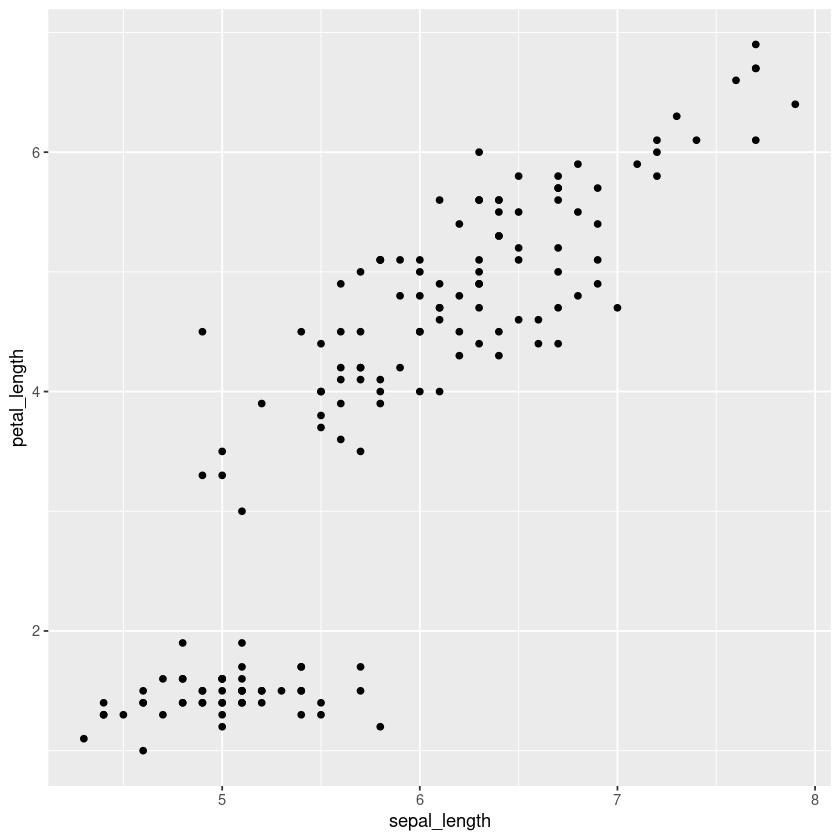
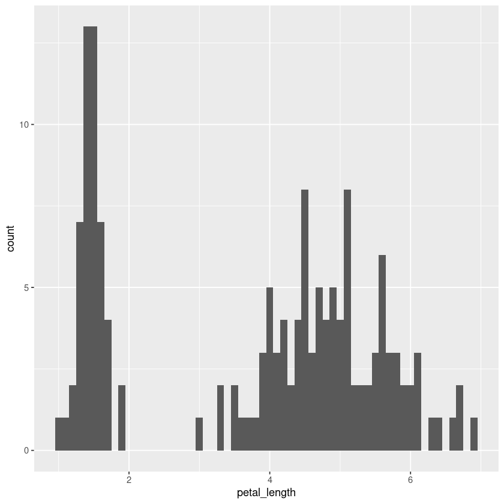
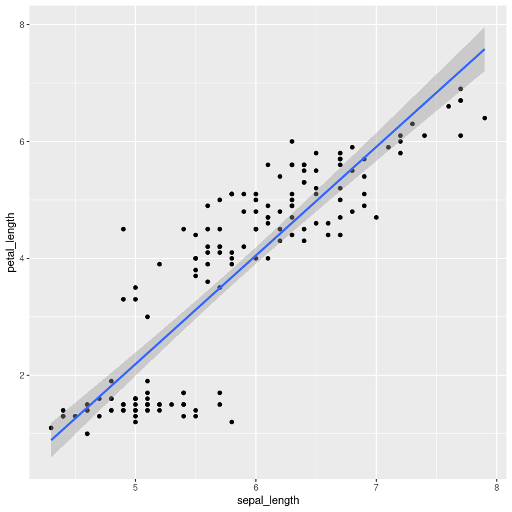
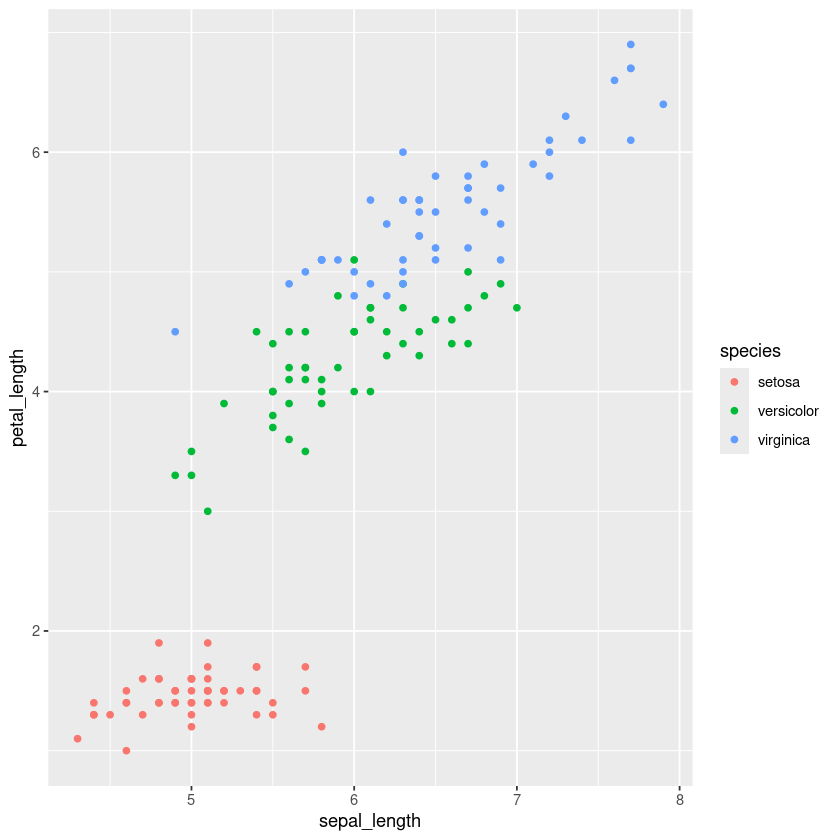
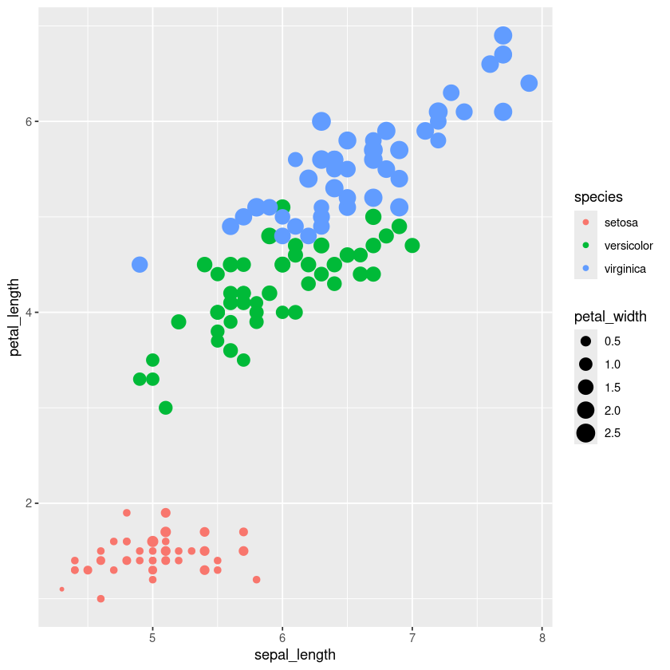
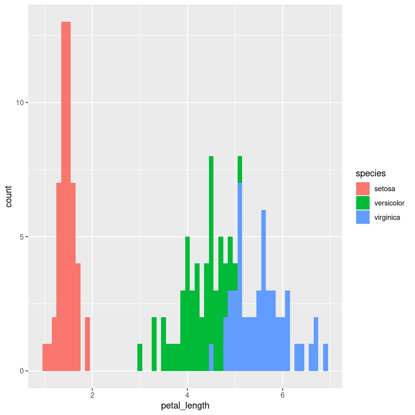

R for data science: Tidyverse#
The tidyverse is one of the most popular ecosystems for data science in R. It includes many R packages commonly used in everyday data analysis. The core packages are as follows:
ggplot2 for visualization
dplyr for data manipulation
tidyr to tidy your data
readr to read data
purrr for functional programming
tibble for enhanced data frames
stringr for string manipulation
forcats for working with categorical data (factors)
Loading the tidyverse#
The tidyverse is a collection of packages. In R, to load a library or package, you simply use the library() function. This is similar to using the import keyword in Python.
# install.packages("tidyverse")
library("tidyverse")
── Attaching core tidyverse packages ──────────────────────── tidyverse 2.0.0 ──
✔ dplyr 1.1.4 ✔ readr 2.1.5
✔ forcats 1.0.0 ✔ stringr 1.5.1
✔ ggplot2 3.5.1 ✔ tibble 3.2.1
✔ lubridate 1.9.3 ✔ tidyr 1.3.1
✔ purrr 1.0.2
── Conflicts ────────────────────────────────────────── tidyverse_conflicts() ──
✖ dplyr::filter() masks stats::filter()
✖ dplyr::lag() masks stats::lag()
ℹ Use the conflicted package (<http://conflicted.r-lib.org/>) to force all conflicts to become errors
The pipe (%>%) operator#
One of the most powerful tools introduced in the tidyverse is the pipe (%>%) operator, which enables chaining functions in a clear, readable way—especially useful for data manipulation tasks.
Here’s an example where we first apply a logical filter, then select specific columns, and finally sort the data:
# Example with the iris dataset
iris.df<-read.csv("https://raw.githubusercontent.com/mwaskom/seaborn-data/refs/heads/master/iris.csv")
iris.df.pipe <- # Save the resulting pipeline into this variable
iris.df %>% # start with the original dataframe
filter(species == "virginica") %>% # take observations corresponding to virginica
select(petal_length, petal_width) %>% # select petal_length and petal_width colums
arrange(desc(petal_length)) # sort data in descending order based on petal_length
head(iris.df.pipe)
| petal_length | petal_width | |
|---|---|---|
| <dbl> | <dbl> | |
| 1 | 6.9 | 2.3 |
| 2 | 6.7 | 2.2 |
| 3 | 6.7 | 2.0 |
| 4 | 6.6 | 2.1 |
| 5 | 6.4 | 2.0 |
| 6 | 6.3 | 1.8 |
Data cleaning#
df.to.clean = data.frame(x = c(2, NA, 1, 1),
y = c(NA, NA, 6, 6)
)
df.to.clean
| x | y |
|---|---|
| <dbl> | <dbl> |
| 2 | NA |
| NA | NA |
| 1 | 6 |
| 1 | 6 |
drop_na: drop missing values#
df.to.clean %>% drop_na()
| x | y |
|---|---|
| <dbl> | <dbl> |
| 1 | 6 |
| 1 | 6 |
replace_na: replace missing values#
df.to.clean %>%replace_na(list(x=0, y=0))
| x | y |
|---|---|
| <dbl> | <dbl> |
| 2 | 0 |
| 0 | 0 |
| 1 | 6 |
| 1 | 6 |
distinc: drop duplicated data#
df.to.clean %>% distinct()
| x | y |
|---|---|
| <dbl> | <dbl> |
| 2 | NA |
| NA | NA |
| 1 | 6 |
Remember: we can concatenate them together.
df.to.clean %>% replace_na(list(x=0, y=0)) %>% distinct()
| x | y |
|---|---|
| <dbl> | <dbl> |
| 2 | 0 |
| 0 | 0 |
| 1 | 6 |
Data manipulation#
# let's load again our Iris dataframe
iris.df<-read.csv("https://raw.githubusercontent.com/mwaskom/seaborn-data/refs/heads/master/iris.csv")
dim(iris.df)
- 150
- 5
str(iris.df)
'data.frame': 150 obs. of 5 variables:
$ sepal_length: num 5.1 4.9 4.7 4.6 5 5.4 4.6 5 4.4 4.9 ...
$ sepal_width : num 3.5 3 3.2 3.1 3.6 3.9 3.4 3.4 2.9 3.1 ...
$ petal_length: num 1.4 1.4 1.3 1.5 1.4 1.7 1.4 1.5 1.4 1.5 ...
$ petal_width : num 0.2 0.2 0.2 0.2 0.2 0.4 0.3 0.2 0.2 0.1 ...
$ species : chr "setosa" "setosa" "setosa" "setosa" ...
filter: Pick observations by their values#
This function allows you to subset observations based on specific conditions.
iris.df.setosa<-iris.df %>% filter(species=="setosa")
head(iris.df.setosa)
| sepal_length | sepal_width | petal_length | petal_width | species | |
|---|---|---|---|---|---|
| <dbl> | <dbl> | <dbl> | <dbl> | <chr> | |
| 1 | 5.1 | 3.5 | 1.4 | 0.2 | setosa |
| 2 | 4.9 | 3.0 | 1.4 | 0.2 | setosa |
| 3 | 4.7 | 3.2 | 1.3 | 0.2 | setosa |
| 4 | 4.6 | 3.1 | 1.5 | 0.2 | setosa |
| 5 | 5.0 | 3.6 | 1.4 | 0.2 | setosa |
| 6 | 5.4 | 3.9 | 1.7 | 0.4 | setosa |
# Here filtering based on two columns
iris.df.setosa.2<-iris.df %>% filter(species=="setosa", sepal_width>3)
head(iris.df.setosa.2)
| sepal_length | sepal_width | petal_length | petal_width | species | |
|---|---|---|---|---|---|
| <dbl> | <dbl> | <dbl> | <dbl> | <chr> | |
| 1 | 5.1 | 3.5 | 1.4 | 0.2 | setosa |
| 2 | 4.7 | 3.2 | 1.3 | 0.2 | setosa |
| 3 | 4.6 | 3.1 | 1.5 | 0.2 | setosa |
| 4 | 5.0 | 3.6 | 1.4 | 0.2 | setosa |
| 5 | 5.4 | 3.9 | 1.7 | 0.4 | setosa |
| 6 | 4.6 | 3.4 | 1.4 | 0.3 | setosa |
# Here filtering with two logical conditions in the same column
iris.df.3<-iris.df %>% filter(sepal_width> 2 & sepal_width <= 3)
head(iris.df.3)
| sepal_length | sepal_width | petal_length | petal_width | species | |
|---|---|---|---|---|---|
| <dbl> | <dbl> | <dbl> | <dbl> | <chr> | |
| 1 | 4.9 | 3.0 | 1.4 | 0.2 | setosa |
| 2 | 4.4 | 2.9 | 1.4 | 0.2 | setosa |
| 3 | 4.8 | 3.0 | 1.4 | 0.1 | setosa |
| 4 | 4.3 | 3.0 | 1.1 | 0.1 | setosa |
| 5 | 5.0 | 3.0 | 1.6 | 0.2 | setosa |
| 6 | 4.4 | 3.0 | 1.3 | 0.2 | setosa |
arrange: sort data by value#
This function takes a dataframe, and a set of column names (or more complicated expressions) to order by (in ascending order by default). If more than one column name is provided, each additional column is used to break ties in the values of preceding columns.
# This sorts the data based on sepal length first and then sepal_width
iris.df.sorted<-iris.df %>% arrange(sepal_length, sepal_width)
head(iris.df.sorted)
| sepal_length | sepal_width | petal_length | petal_width | species | |
|---|---|---|---|---|---|
| <dbl> | <dbl> | <dbl> | <dbl> | <chr> | |
| 1 | 4.3 | 3.0 | 1.1 | 0.1 | setosa |
| 2 | 4.4 | 2.9 | 1.4 | 0.2 | setosa |
| 3 | 4.4 | 3.0 | 1.3 | 0.2 | setosa |
| 4 | 4.4 | 3.2 | 1.3 | 0.2 | setosa |
| 5 | 4.5 | 2.3 | 1.3 | 0.3 | setosa |
| 6 | 4.6 | 3.1 | 1.5 | 0.2 | setosa |
If we want to reorder in descending order, we can use the function desc. This, in contrast to Python’s Pandas, can be specified to single columns:
# This sorts the data based on sepal length first, in descending order, and then sepal_width, in ascending order
iris.df.sorted<-iris.df %>% arrange(desc(sepal_length), sepal_width)
head(iris.df.sorted)
| sepal_length | sepal_width | petal_length | petal_width | species | |
|---|---|---|---|---|---|
| <dbl> | <dbl> | <dbl> | <dbl> | <chr> | |
| 1 | 7.9 | 3.8 | 6.4 | 2.0 | virginica |
| 2 | 7.7 | 2.6 | 6.9 | 2.3 | virginica |
| 3 | 7.7 | 2.8 | 6.7 | 2.0 | virginica |
| 4 | 7.7 | 3.0 | 6.1 | 2.3 | virginica |
| 5 | 7.7 | 3.8 | 6.7 | 2.2 | virginica |
| 6 | 7.6 | 3.0 | 6.6 | 2.1 | virginica |
select: select columns#
It allows you to pick a subset of variables.
# This selects columns by the given names of the columns. Here we just select sepal_length, sepal_width and species
iris.df.select<-iris.df %>% select(sepal_length, sepal_width, species)
head(iris.df.select)
| sepal_length | sepal_width | species | |
|---|---|---|---|
| <dbl> | <dbl> | <chr> | |
| 1 | 5.1 | 3.5 | setosa |
| 2 | 4.9 | 3.0 | setosa |
| 3 | 4.7 | 3.2 | setosa |
| 4 | 4.6 | 3.1 | setosa |
| 5 | 5.0 | 3.6 | setosa |
| 6 | 5.4 | 3.9 | setosa |
If you want to select consecutive columns, we can use the : operator, as in vectors.
# This selects all columns between sepal_length and petal_width (inclusive)
iris.df.select.2<-iris.df %>% select(sepal_length:petal_width)
head(iris.df.select.2)
| sepal_length | sepal_width | petal_length | petal_width | |
|---|---|---|---|---|
| <dbl> | <dbl> | <dbl> | <dbl> | |
| 1 | 5.1 | 3.5 | 1.4 | 0.2 |
| 2 | 4.9 | 3.0 | 1.4 | 0.2 |
| 3 | 4.7 | 3.2 | 1.3 | 0.2 |
| 4 | 4.6 | 3.1 | 1.5 | 0.2 |
| 5 | 5.0 | 3.6 | 1.4 | 0.2 |
| 6 | 5.4 | 3.9 | 1.7 | 0.4 |
And you can use a minus (-) operator before the name of the columns to filter them out.
# This selects all columns but sepal_length and sepal_width
iris.df.select.3<-iris.df %>% select(-sepal_length, -sepal_width)
head(iris.df.select.3)
| petal_length | petal_width | species | |
|---|---|---|---|
| <dbl> | <dbl> | <chr> | |
| 1 | 1.4 | 0.2 | setosa |
| 2 | 1.4 | 0.2 | setosa |
| 3 | 1.3 | 0.2 | setosa |
| 4 | 1.5 | 0.2 | setosa |
| 5 | 1.4 | 0.2 | setosa |
| 6 | 1.7 | 0.4 | setosa |
And you can also remove consecutive columns by combining both operators:
iris.df.select.4<-iris.df %>% select(-(sepal_length:petal_width))
head(iris.df.select.4)
| species | |
|---|---|
| <chr> | |
| 1 | setosa |
| 2 | setosa |
| 3 | setosa |
| 4 | setosa |
| 5 | setosa |
| 6 | setosa |
mutate: creating columns#
This function allows you to add new columns to data frames. It would be mostly similar to assign in Python’s Pandas
# This creates a new column by multiplying summing sepal_length with sepal_width
iris.df.volume<-iris.df %>% mutate(sepal_volume=sepal_length*sepal_width)
head(iris.df.volume)
| sepal_length | sepal_width | petal_length | petal_width | species | sepal_volume | |
|---|---|---|---|---|---|---|
| <dbl> | <dbl> | <dbl> | <dbl> | <chr> | <dbl> | |
| 1 | 5.1 | 3.5 | 1.4 | 0.2 | setosa | 17.85 |
| 2 | 4.9 | 3.0 | 1.4 | 0.2 | setosa | 14.70 |
| 3 | 4.7 | 3.2 | 1.3 | 0.2 | setosa | 15.04 |
| 4 | 4.6 | 3.1 | 1.5 | 0.2 | setosa | 14.26 |
| 5 | 5.0 | 3.6 | 1.4 | 0.2 | setosa | 18.00 |
| 6 | 5.4 | 3.9 | 1.7 | 0.4 | setosa | 21.06 |
We can always use a preceding created column to define a new column.
# This creates a new column by multiplying multiplying sepal_length with sepal_width, and a second column with the logarithm
iris.df.volume.2<- iris.df %>% mutate(sepal_volume=sepal_length*sepal_width, sepal_volume_log=log(sepal_volume))
head(iris.df.volume.2)
| sepal_length | sepal_width | petal_length | petal_width | species | sepal_volume | sepal_volume_log | |
|---|---|---|---|---|---|---|---|
| <dbl> | <dbl> | <dbl> | <dbl> | <chr> | <dbl> | <dbl> | |
| 1 | 5.1 | 3.5 | 1.4 | 0.2 | setosa | 17.85 | 2.882004 |
| 2 | 4.9 | 3.0 | 1.4 | 0.2 | setosa | 14.70 | 2.687847 |
| 3 | 4.7 | 3.2 | 1.3 | 0.2 | setosa | 15.04 | 2.710713 |
| 4 | 4.6 | 3.1 | 1.5 | 0.2 | setosa | 14.26 | 2.657458 |
| 5 | 5.0 | 3.6 | 1.4 | 0.2 | setosa | 18.00 | 2.890372 |
| 6 | 5.4 | 3.9 | 1.7 | 0.4 | setosa | 21.06 | 3.047376 |
# Obviously, this is going to give an error because we are trying to use a sepal_volume before it was created
iris.df.volume.3<-iris.df %>% mutate(sepal_volume_log=log(sepal_volume), sepal_volume=sepal_length*sepal_width)
head(iris.df.volume.3)
Error in `mutate()`:
ℹ In argument: `sepal_volume_log = log(sepal_volume)`.
Caused by error:
! objeto 'sepal_volume' no encontrado
Traceback:
1. mutate(., sepal_volume_log = log(sepal_volume), sepal_volume = sepal_length *
. sepal_width)
2. mutate.data.frame(., sepal_volume_log = log(sepal_volume), sepal_volume = sepal_length *
. sepal_width)
3. mutate_cols(.data, dplyr_quosures(...), by)
4. withCallingHandlers(for (i in seq_along(dots)) {
. poke_error_context(dots, i, mask = mask)
. context_poke("column", old_current_column)
. new_columns <- mutate_col(dots[[i]], data, mask, new_columns)
. }, error = dplyr_error_handler(dots = dots, mask = mask, bullets = mutate_bullets,
. error_call = error_call, error_class = "dplyr:::mutate_error"),
. warning = dplyr_warning_handler(state = warnings_state, mask = mask,
. error_call = error_call))
5. mutate_col(dots[[i]], data, mask, new_columns)
6. mask$eval_all_mutate(quo)
7. eval()
8. .handleSimpleError(function (cnd)
. {
. local_error_context(dots, i = frame[[i_sym]], mask = mask)
. if (inherits(cnd, "dplyr:::internal_error")) {
. parent <- error_cnd(message = bullets(cnd))
. }
. else {
. parent <- cnd
. }
. message <- c(cnd_bullet_header(action), i = if (has_active_group_context(mask)) cnd_bullet_cur_group_label())
. abort(message, class = error_class, parent = parent, call = error_call)
. }, "objeto 'sepal_volume' no encontrado", base::quote(NULL))
9. h(simpleError(msg, call))
10. abort(message, class = error_class, parent = parent, call = error_call)
11. signal_abort(cnd, .file)
12. signalCondition(cnd)
group_by and summarize: collapse down to a single summary#
This would be similar to using groupby method in Pandas’ dataframes
# This first groups by species and then calculates the average sepal length within each category
iris.df %>% group_by(species) %>% summarize(mean_sepal_length = mean(sepal_length))
| species | mean_sepal_length |
|---|---|
| <chr> | <dbl> |
| setosa | 5.006 |
| versicolor | 5.936 |
| virginica | 6.588 |
# You can can have several aggregation methods too
iris.df %>% group_by(species) %>% summarize(mean_sepal_length = mean(sepal_length),
median_sepal_length = median(sepal_length))
| species | mean_sepal_length | median_sepal_length |
|---|---|---|
| <chr> | <dbl> | <dbl> |
| setosa | 5.006 | 5.0 |
| versicolor | 5.936 | 5.9 |
| virginica | 6.588 | 6.5 |
If you want to apply the same aggregation method to several columns, you need to use the across function:
# This first groups by species and then calculates the average across all columns between sepal_length and petal_width
iris.df %>% group_by(species) %>% summarize(across(sepal_length:petal_width, mean))
| species | sepal_length | sepal_width | petal_length | petal_width |
|---|---|---|---|---|
| <chr> | <dbl> | <dbl> | <dbl> | <dbl> |
| setosa | 5.006 | 3.428 | 1.462 | 0.246 |
| versicolor | 5.936 | 2.770 | 4.260 | 1.326 |
| virginica | 6.588 | 2.974 | 5.552 | 2.026 |
pivot_longer: reshape data to long format#
This would be similart to pd.melt in Python’s Pandas
iris.df.melt<-iris.df %>% pivot_longer(sepal_length:petal_width)
head(iris.df.melt)
| species | name | value |
|---|---|---|
| <chr> | <chr> | <dbl> |
| setosa | sepal_length | 5.1 |
| setosa | sepal_width | 3.5 |
| setosa | petal_length | 1.4 |
| setosa | petal_width | 0.2 |
| setosa | sepal_length | 4.9 |
| setosa | sepal_width | 3.0 |
Data visualization#
I don’t want to finish this introduction to doing data science in R without briefly showing ggplot2.
ggplot2 is for data visualization, and personally, I think it is the best thing in R. It allows you to create magnificient and professional plots in an elegant and versatile way.
It is based on grammar of graphics, a coherent system for describing and building graphs.
To build a ggplot, you need to use the following basic template that can be used for different types of plots:
ggplot(data = <DATA>, mapping = aes(<MAPPINGS>)) + <GEOM_FUNCTION>()
or
ggplot(data = <DATA>) + <GEOM_FUNCTION>(mapping = aes(<MAPPINGS>))
In a nutshell:
One begins a plot with the function
ggplot, which creates a coordinate system where you can add layers to.The first argument of
ggplotis the dataset to use in the graph.The graph can be then completed by adding one or more layers to
ggplotusing ageomfunction.Each
geomfunction in ggplot2 takes a mapping argument. This defines how variables in your dataset are mapped to visual properties. The mapping argument is always paired with the functionaes, and the x and y arguments ofaes()specify which variables to map to the x- and y-axes.ggplot2 comes with many
geomfunctions that each add a different type of layer to a plot
iris.df %>% ggplot(aes(x=sepal_length, y=petal_length)) + geom_point()
# or
iris.df %>% ggplot() + geom_point(aes(x=sepal_length, y=petal_length))

iris.df %>% ggplot(aes(x=petal_length)) + geom_histogram(binwidth = 0.1)

We can assign the plot to a variable and render it any time we like:
g <- iris.df %>% ggplot(aes(x=sepal_length, y=petal_length)) + geom_point()
g
And we can keep adding layers to incorporate more graphics to the plot:
g + geom_smooth(method='lm')
`geom_smooth()` using formula = 'y ~ x'

The full list of available layers (geom_ functions) can be found at https://ggplot2.tidyverse.org/reference.
And as we mentioned, we can also control the aesthetics of the plot through the aes function. Examples of this include:
Position (i.e., on the x and y axes)
Color (“outside” color)
Fill (“inside” color)
Shape (of points)
Alpha (Transparency)
Line type
Size
iris.df %>% ggplot(aes(x=sepal_length, y=petal_length, color=species)) + geom_point()

iris.df %>% ggplot(aes(x=sepal_length, y=petal_length, color=species, size=petal_width)) + geom_point()

iris.df %>% ggplot(aes(x=petal_length, fill=species)) + geom_histogram(binwidth = 0.1)

I recommend visiting the R graph gallery for a complete list of recipes on creating graphs using ggplot. You’ll have fun!
Practice exercises#
Exercise 61
1- Import the data from “https://vincentarelbundock.github.io/Rdatasets/csv/psych/sat.act.csv”, which contains SAT and ACT scores for a sample of students. Save it to a variable named sat.dat.
2- Convert “education” and “gender” columns to factor type. (Hint: use as.factor function)
3- Using the pipe (%>%) operator, perform the following operations in sequence:
Filter the data to include only observations where
ageis between 18 and 45 years.Create a new variable,
SAT.avg, representing the average ofSATQandSATV.Select the columns
gender,education, andSAT.avg.Group the dataframe by
genderandeducation.Summarize the dataframe by computing the mean and standard deviation of
SAT.avg. Here, since there are some missing information, you will need to remove these observations. You can actually do this when using themeanandsdfunctions. Look into their documentation to figure out how to do this.
Save the resulting dataframe in a variable named sat.dat.preprocessed and display it.
4- With the resulting dataframe, create a barplot using geom_bar:
Set the x position to each level of
education, and theheight(y position) to the mean ofSAT.avg.To display a separate bar for each
gender, setfill = genderin the aesthetics, and useposition = "dodge"to place the bars side by side rather than stacked.
Adjust the plot aesthetics to make it more visually appealing. You may find the following page useful for this: https://r-graph-gallery.com/4-barplot-with-error-bar.html
# Your answers from here